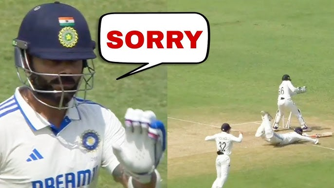

2nd Test - South Africa tour of Bangladesh
RSA 105-1
Day 1: 1st Session
3rd ODI - New Zealand Women tour of India
India Women vs New Zealand Women
Today, 01:45 PM
5th Match - Women's Big Bash League 2024-25
Sydney Sixers Women vs Adelaide Strikers Women
Today, 12:55 PM
Elite Group A - Ranji Trophy Elite 2024-25
MUM 450 & 80-5
Day 4: 1st Session - Mumbai lead by ...
Latest News
Williamson to miss Mumbai Test
3h agoMatthew Wade retires from international cricket
4h agoMahidul Islam Ankon replaces Jaker Ali for Chittagong Test
18h agoTaijul throws his hat in the ring for Test captaincy
21h agoFeatured Videos

Rishabh Pant's run-out nothing but a schoolboy error: Manoj Tiwary

Series loss to New Zealand a bitter pill to swallow